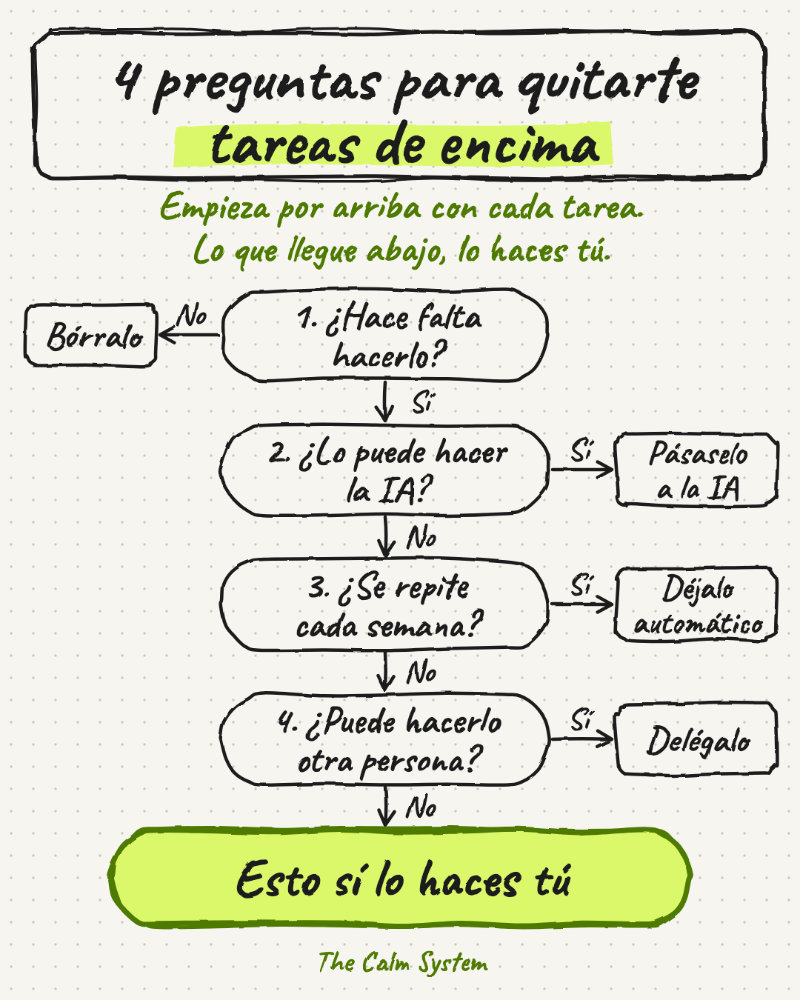

4 preguntas para quitarte tareas de encima
El mapa para saber qué borrar, qué pasarle a la IA, qué dejar automático, qué delegar y qué haces tú. Te mando el mapa con un diagnóstico para ver dónde se atasca tu negocio y unas instrucciones para pegar en ChatGPT o Claude, para que la IA te ordene lo que hayas contestado.
- 4 preguntas para cada tarea
- 5 pasos para ver dónde se atasca
- Instrucciones listas para la IA

EL MAPA
4 preguntas para cada tarea
Cada cosa que haces baja por el mapa hasta saber si la borras, se la pasas a la IA, la dejas automática, la delegas o la haces tú.
EL DIAGNÓSTICO
5 pasos para tu negocio
Ves qué decisiones pasan por ti, qué se para si no estás, qué está solo en tu cabeza y por dónde empezar.
LAS INSTRUCCIONES
La IA te lo ordena
Le pegas lo que has contestado y te dice dónde se atasca tu negocio, cuáles son las 3 tareas que más horas te devuelven y los pasos para quitártelas.
The Calm System · Política de privacidad